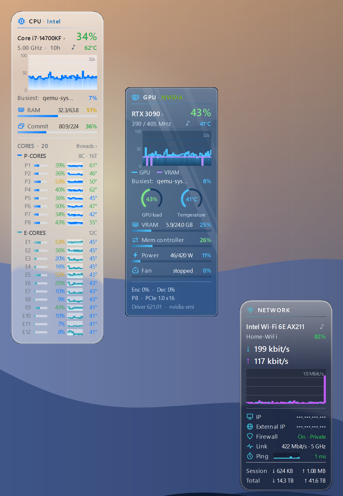
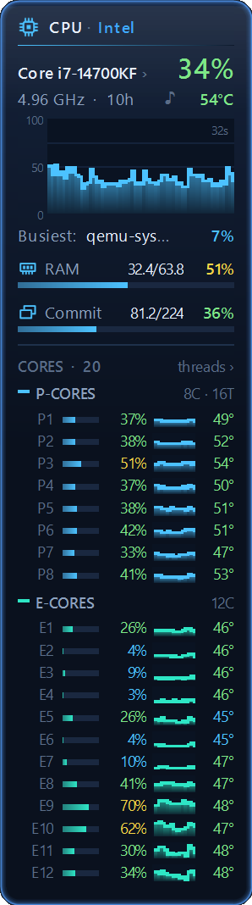
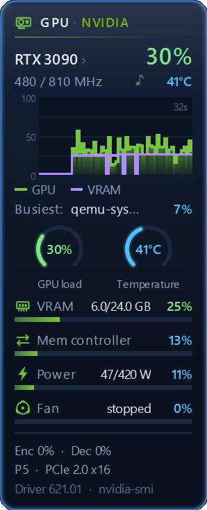
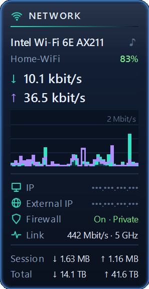
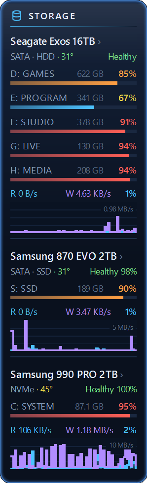
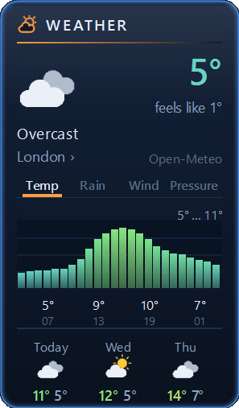
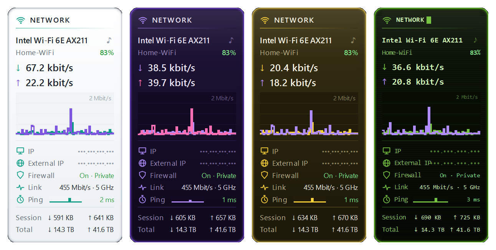
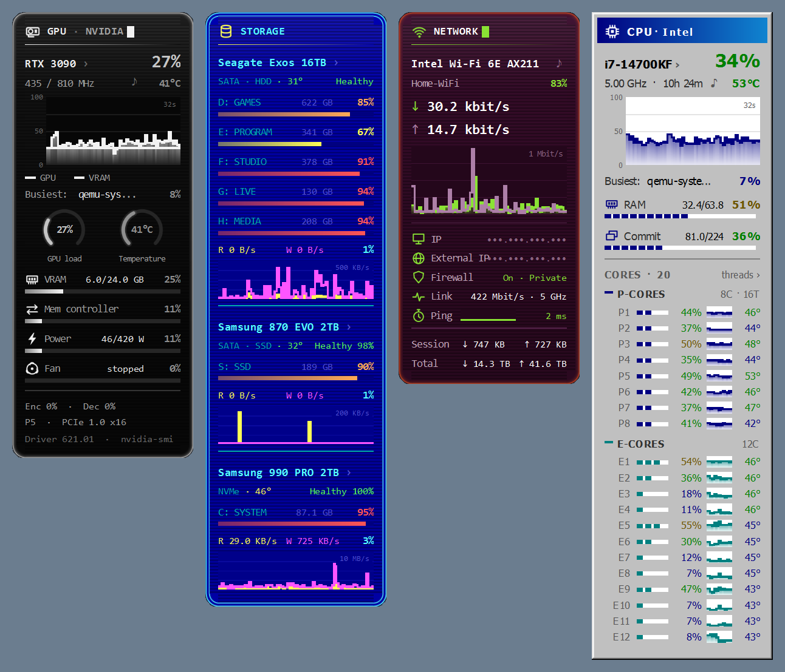

Modern Meters
Five modern desktop gadgets for Windows: CPU, GPU, Network, Drives and Weather. Free, in 12 languages.
Download the latest versionNeeds the Windows Sidebar from 8GadgetPack.






The gadgets
- CPU Meter — load of every thread or core (P- and E-cores grouped), clock, temperature, RAM and commit, history graph, uptime, the busiest program right now; click the processor for the top programs
- GPU Meter — load, VRAM, power, fan, clocks, encoder/decoder, temperature, the busiest program on the card; NVIDIA, AMD and Intel, discrete and integrated
- Network Meter — download and upload speed, Wi-Fi and signal, IP addresses (hidden until clicked), firewall, ping, traffic totals
- Drives Meter — disks and partitions, SMART health, SSD life left, temperature, read/write speed
- Weather Meter — current weather, hourly chart (temperature, precipitation, wind, pressure), rain radar, 3 or 5 days, sunrise and sunset, UV and air quality, and when rain or snow starts or stops in the next two hours
Graphs
Hover over any graph to see the value at that moment and its lowest, average and highest. A graph can show the last minute or two, or 5 minutes, 15 minutes or an hour.
Styles
Glass, Classic, Light, Colored glass in eight accent colors, Retro terminal with scanlines, black-and-white, blue commander and aubergine terminals, Gray 90s, and Sky glass and Lens glass with your wallpaper blurred underneath (inspired by Windows 7's Aero and Apple's Liquid Glass), and Auto, which follows Windows' light or dark mode.


Install
- Install 8GadgetPack if you don't have the Sidebar yet.
- Download the
.gadgetfiles from the latest release and double-click the ones you want. - Right-click the desktop → Gadgets, and drag a gadget onto the desktop. Settings are under the wrench icon.
New versions show a small ↑ badge on the gadgets; one click updates all of them. Nothing is installed without that click.
Privacy
No tracking. Network Meter asks api.ipify.org for your external IP (can be turned off). Weather Meter gets the forecast from Open-Meteo with coordinates rounded to about 1 km; picking a city by hand turns location off. Once a day one gadget asks GitHub whether a new version exists.
Support
The gadgets are free and open source (source on GitHub). If you like them, you can buy us a coffee on Ko-fi. Questions, ideas or bugs: open an issue.